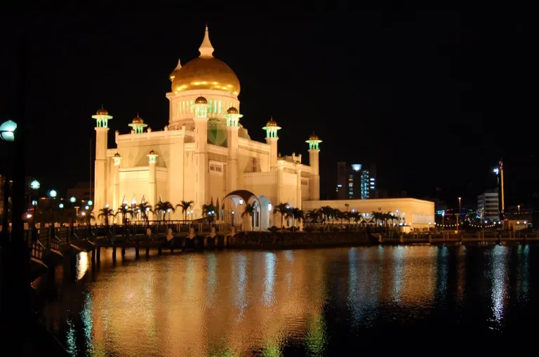
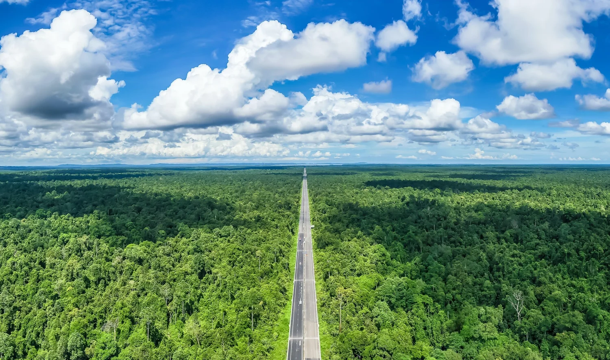

Our Story
Learn about Brunei's history and communities.
Discover our story →THE ABODE OF PEACE
Discover Brunei's beautiful places, rich history, and welcoming culture.
Learn about Brunei's history and communities.
Discover our story →Explore mosques, water villages, museums and rainforests.
See the attractions →Find travel tips, entry information and useful Malay phrases.
Get ready →Discover remarkable Islamic architecture, including the golden dome of Sultan Omar Ali Saifuddien Mosque.
Experience local traditions, hospitality and the historic Kampong Ayer water village.
Enjoy a calm destination known as the Abode of Peace.
Explore the biodiversity of Ulu Temburong National Park.
Brunei has four districts: Brunei-Muara, Belait, Tutong and Temburong.


